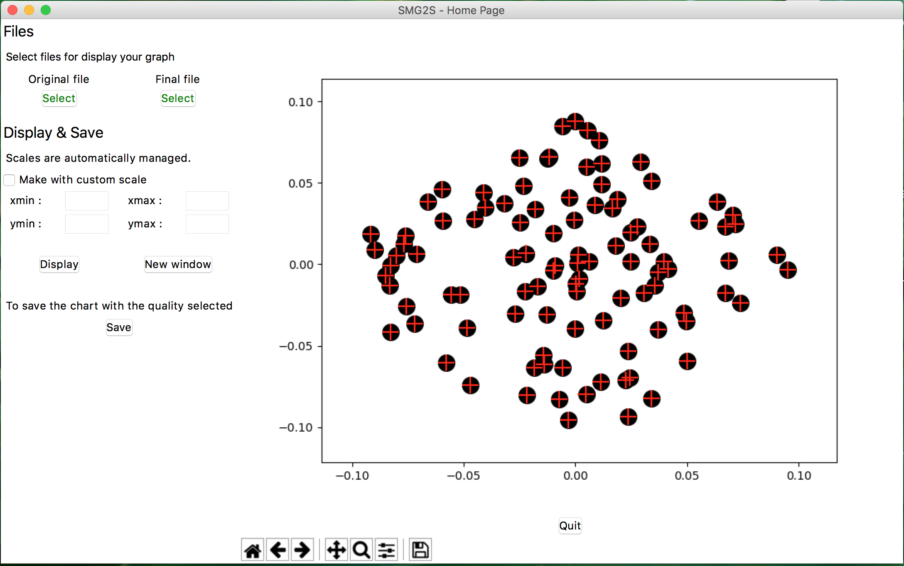

SMG2S provides the functionality to verify the abilibity to keep given spectrum. In the directory of verification. The implementation of the functionality is powerInverse.cpp.
Compile :
make This will generate an executable powerInverse.exe
The given spectrum is stored in a file vector.txt by the matrix-market vector format.
%%MatrixMarket matrix coordinate complex general3 3 31 10 6.51542 10.6288 3.47903 10.7621 5.0540...
Running script:
#!/bin/bash
EXEC=./powerInverse.exe
N=100
L=10
TEST_TOL=0.00001
DEGREE=4
LENGTH=$(awk 'NR==2{print $1}' vector.txt)
echo "Test Eigenvalues number = "${LENGTH}
for((i=3;i<=${LENGTH}+2;i++))
do
real=$(awk 'NR=='$i'{print $2}' vector.txt)
imag=$(awk 'NR=='$i'{print $3}' vector.txt)
mpirun -np 1 ${EXEC} -n ${N} -l ${L} -eps_monitor_conv -eps_power_shift_type constant -st_type sinvert -exact_value ${real}+${imag}i -test_tol ${TEST_TOL} -degree ${DEGREE}
done
Suppose the result is stored in vector1_results.txt. With the help of traitement.sh, vector1_results.txt can be cleaned and stored with matrix market format into vector1_results_clean.txt. The 1st and 2nd arugments for the execution are seperately the initial results file and the final cleaned and formatted file.
./traitement.sh vector1_results.txt vector1_results_clean.txtThe verification results can be compared by the proposed Graphic User Interface:
We recommand to you to see the example for learn how work the GUI of SMG2S and how use it.